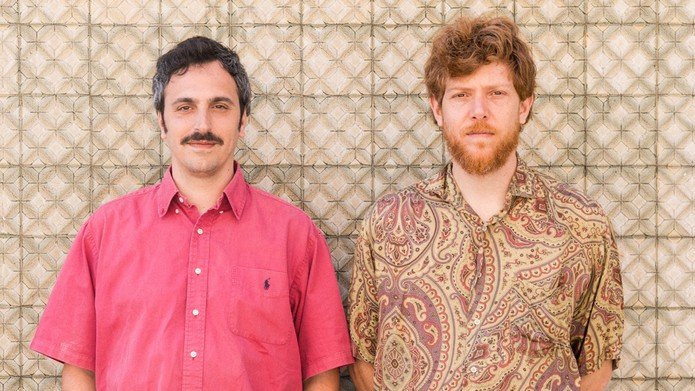

Nu Genea Live Band is an Italian collective known for their vibrant fusion of 70s-inspired funk, disco, and global music traditions, creating a unique and danceable sound. Their live performances are celebrated for their energy and musicianship, featuring a mix of electronic and organic instrumentation.
Nu Genea Live Band combines retro funk and disco grooves with influences from world music, delivering a fresh and eclectic sound that captivates audiences. Their live shows are dynamic and immersive, showcasing a seamless blend of electronic beats and live instrumentation.
Imagine yourself on the sun-drenched beaches around Naples and savor the rich musical history of the port city at the foot of Mount Vesuvius. That is the promise of Nu Genea Live Band, the brainchild of Massimo Di Lena and Lucio Aquilina, who infuse Mediterranean influences into sultry funk and summery soul. The tasteful result overflows with creative ideas, a spirit of experimentation that can be traced back to their collaborations with the renowned Afrobeat drummer Tony Allen, who provided percussion for Fela Kuti in the 1970s.
Waan je op de zonovergoten stranden rondom Napels en proef de rijke muzikale geschiedenis van de havenstad aan de voet van de Vesuvius. Dat is de belofte van Nu Genea Live Band, het geesteskind van Massimo Di Lena en Lucio Aquilina die mediterrane invloeden door laten drenken in wulpse funk en zomerse soul. Het smaakvolle resultaat barst van de creatieve ideeën, een experimenteerdrift die is te herleiden naar hun samenwerkingen met de gerenommeerde afrobeat-drummer Tony Allen, die in de jaren zeventig de percussie voor Fela Kuti verzorgde.
6
⚤ Mixed
Yes